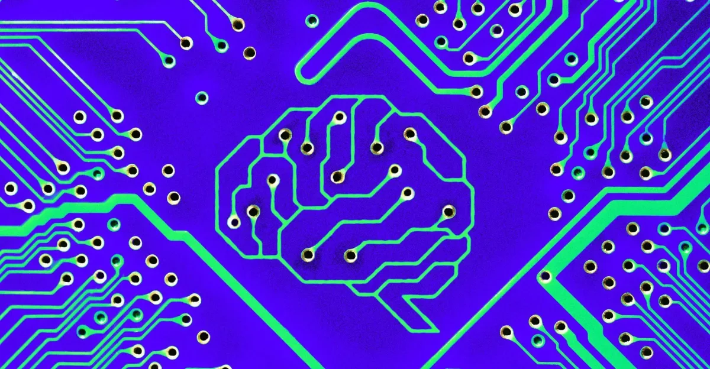
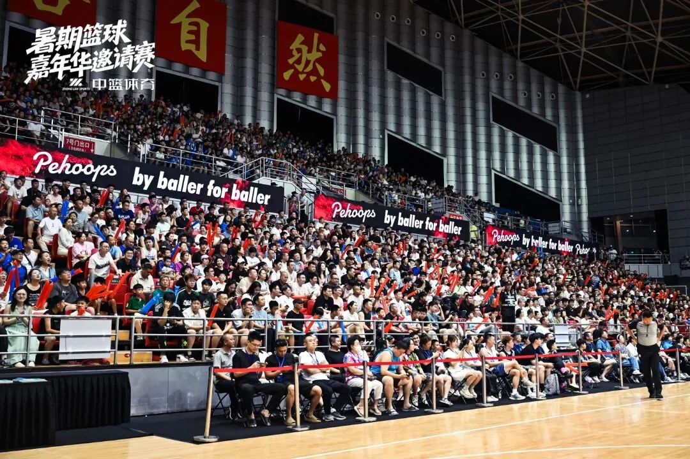

AI并购、模型竞赛与搜索重塑：科技圈的三条暗线
Midjourney收购占星App、Anthropic发布Opus 5、Meta改造聊天机器人、谷歌零点击搜索成常态——这些事件背后是AI行业从技术到商业的深层变化。
把每天真正值得理解的事情，写成可以慢慢读的文章，也做成可以随时听的播客。

Midjourney收购占星App、Anthropic发布Opus 5、Meta改造聊天机器人、谷歌零点击搜索成常态——这些事件背后是AI行业从技术到商业的深层变化。

本期从美国罗德岛州接管普罗维登斯学区七年的数据报告出发，探讨教育干预的成效与局限；再聚焦学生主导的AI权利法案，思考技术伦理如何在校园落地；最后回到国内高校干部培训与科产融合，串联起教育公平、技术赋能与治理能力提升的全球图景。

今晚哈尔滨上演“冰城双子星”对决，CBA三强齐聚篮球嘉年华；广东宏远换帅、浙江签约维塔尔，联赛格局生变；The Hundred板球创纪录、皇马欲签罗德里。从关键节点到普通人的运动生活，伊恩带你热血解读。